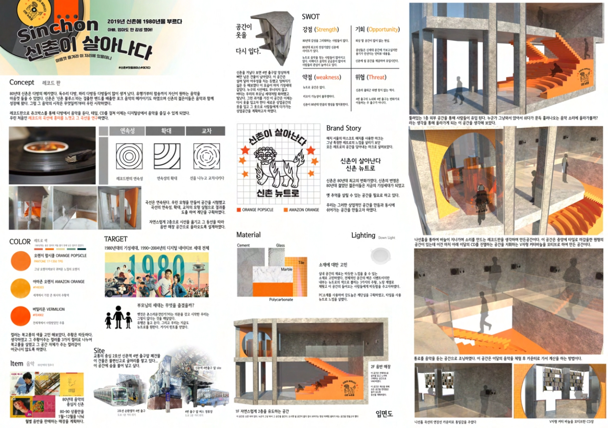

PROJECT 01
PROJECT 01
공간디자인 · INTERIOR
// UI · UX · BRAND
산업 현장을 이해하는 디자이너의 시선으로 만든 인터페이스와 브랜드 작업물을 모았습니다. 현장과 스크린 사이의 간극을 좁히는, ‘진짜로 작동하는’ 디자인을 지향합니다.
PROJECT 01
공간디자인 · INTERIOR

PROJECT 02VMD · VISUAL MERCHANDISING
 PROJECT 03
▶
PROJECT 03
▶
UCC · VIDEO